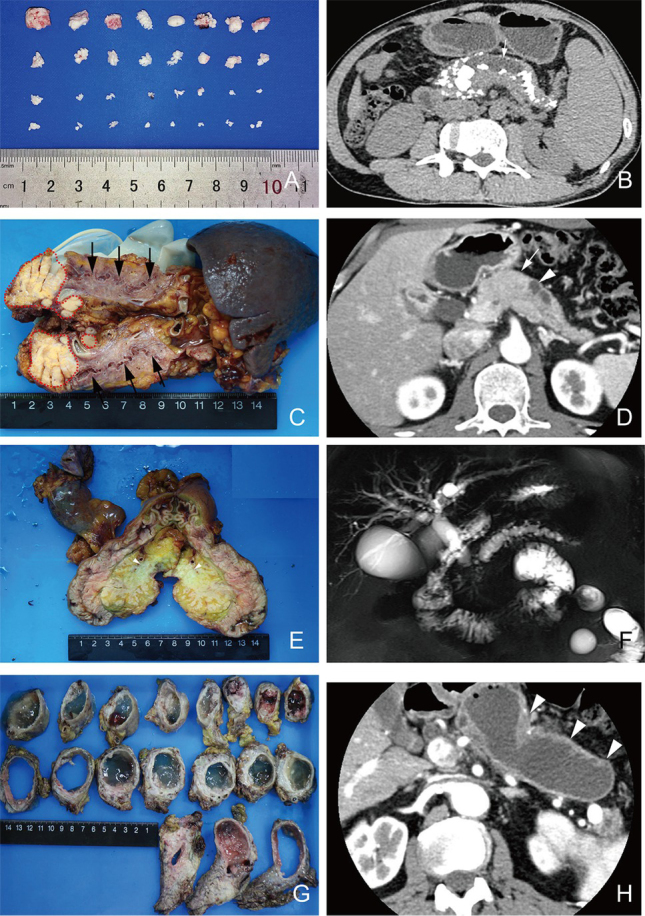

136 — U đặc & nang tụy: PDAC, pNET, IPMN/MCN/SCN / Pancreatic tumors & cysts
Tags: pattern:u-tuy vung:tuy
Mức chắc chắn (certainty): tổng hợp y văn (literature synthesis) — nhóm tự biên từ y văn mở, chưa gắn ca nguyên văn đơn lẻ.
1. Tổng quan — double-duct + thông ống chính + xơ đặc
- PDAC đầu tụy: khối giảm ngấm (xơ đặc) + cắt cụt đột ngột mật + tụy (double-duct) + teo thân đuôi + xâm lấn mạch (SMA/SMV/TC).
- pNET: ngấm mạnh ĐM (trừ kém biệt hóa) — insulinoma nhỏ (< 2 cm) + hạ đường huyết.
- IPMN: thông ống tụy chính (nhánh, chính, hỗn hợp) — nhánh < 3 cm không nốt theo dõi; chính ≥ 10 mm/nốt/vàng da = mổ.
- MCN (nang bà ngoại/mẹ): nữ trung niên + thân đuôi + không thông ống + vôi hóa vỏ trứng; SCN: tổ ong + sẹo sao trung tâm + không thông ống — lành tính.
- TẠI SAO mổ được hay không do mạch: bao > 180° SMA/TC hoặc tắc SMV không tái tạo = không cắt được.
2. Gamut khối/nang tụy
- PDAC: giảm ngấm + double-duct + teo + xâm lấn mạch — CA19-9 + Whipple khi còn mổ.
- pNET: ngấm mạnh + hội chứng hormone — Ga-68 DOTATATE + mổ/cắt chọn lọc.
- IPMN: thông ống chính + nốt trong nang — nhánh theo dõi, chính mổ.
- MCN/SCN: nữ + thân đuôi; MCN không thông ống (mổ khi lớn), SCN tổ ong sẹo sao (theo dõi).

E–F: double-duct PDAC + MRCP; G–H: IPMN giãn ống chính lan tỏa. Nguồn: Bian et al., J Transl Int Med 2022 Fig. 4, CC BY-NC-ND 3.0 (giữ nguyên bản).3. Bảng so sánh
| Thực thể (entity) | Hình ảnh | Chốt | Xử trí |
|---|---|---|---|
| PDAC | Giảm ngấm + double-duct + teo + xâm lấn SMA/SMV | Cắt cụt 2 ống + CA19-9 | Whipple khi mạch còn được |
| pNET | Ngấm mạnh ĐM + hội chứng hormone | Ngấm + insulinoma/gastrinoma | DOTATATE + mổ |
| IPMN | Thông ống chính + nốt/vàng da | Ống chính ≥ 10 mm/nốt = mổ | Nhánh < 3 cm theo dõi |
| MCN/SCN | Không thông ống; MCN đơn ổ nữ, SCN tổ ong sẹo sao | Vỏ trứng MCN / sẹo sao SCN | MCN mổ, SCN theo dõi |
4. Protocol
- CT thì tụy 40–45s (PDAC giảm ngấm) + MRI/MRCP (ống, nang, thông ống) + EUS-FNA khi cần mô bệnh.
- Đánh giá mạch: SMA/TC bao > 180°, SMV tắc/tái tạo — quyết định Whipple.
5. Cạm bẫy
- Viêm tụy khu trú giả PDAC (double-duct cả 2) — IgG4 + đáp ứng steroid thử + sinh thiết.
- Nang giả thông ống giả sau viêm — tiền sử viêm tụy + không nốt (bài 135).
- pNET kém biệt hóa giảm ngấm giả PDAC — Ga-68 DOTATATE + Ki-67.
6. Tự lượng giá — Blind Quiz
Ca 1 — Vàng da + gầy + cắt cụt 2 ống. Đọc MRCP + mô bệnh.
- Hỏi: panel nào là PDAC? Panel nào là IPMN? Dấu chung và khác?
Bấm để hiện đáp án
- E–F: PDAC (khối xơ + cắt cụt 2 ống); G–H: IPMN (giãn ống chính lan tỏa + nhầy) — chung double-duct, khác khối đặc vs thông ống.
- Nguồn: Bian et al., Fig. 4, CC BY-NC-ND 3.0 (nguyên bản).
Ca 2 — Nang thân đuôi 4 cm + vôi hóa vỏ trứng + không thông ống, nữ 45 tuổi: IPMN/MCN/SCN? Mổ không? (Bảng mục 3.)
Bấm để hiện đáp án
- MCN: mổ (nguy cơ ác + không thông ống).
Bài liên quan chéo
- 100 – Tổng quan hệ Bụng
- 131 – Tắc mật (vàng da tắc mật)
- 135 – Viêm tụy Atlanta (nang giả vs IPMN)
Không dùng để chẩn đoán độc lập khi chưa có người hướng dẫn.